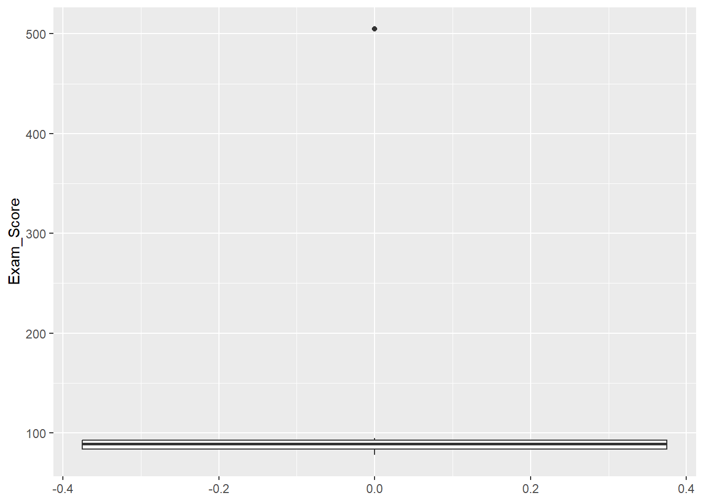
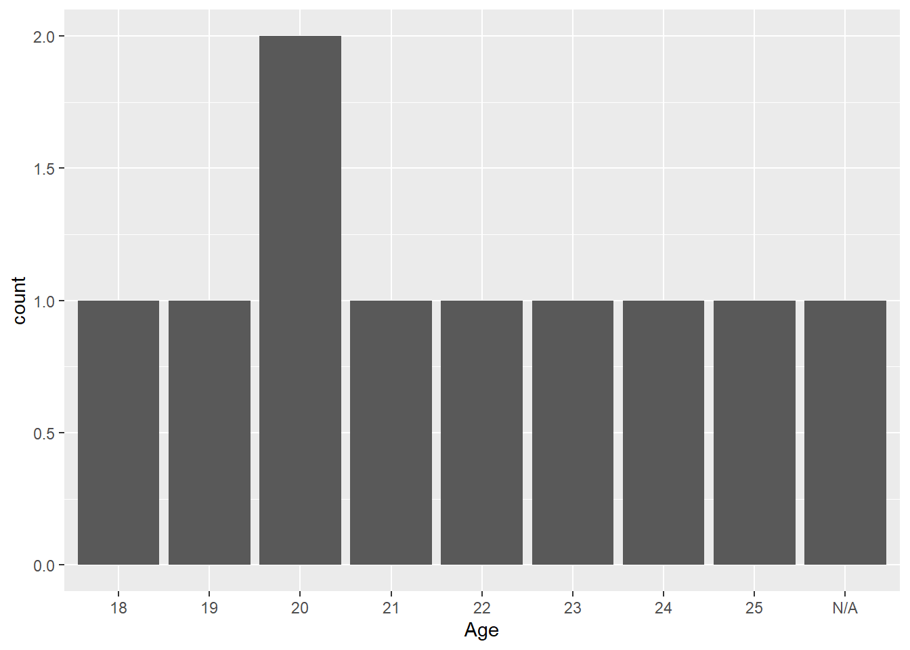

Student_ID Exam_Score Gender Age
Min. : 1.00 Min. : 78.00 Female :3 Length:10
1st Qu.: 3.25 1st Qu.: 83.75 FEMALE :1 Class :character
Median : 5.50 Median : 89.00 Male :4 Mode :character
Mean : 5.50 Mean :139.12 Non-Binary:1
3rd Qu.: 7.75 3rd Qu.: 92.75 Unknown :1
Max. :10.00 Max. :505.00
NA's :2
GPA
Min. :2.900
1st Qu.:3.525
Median :3.750
Mean :3.810
3rd Qu.:4.125
Max. :5.000
Preprocessing
Introduction
Behind the hype of data modeling and machine learning there is a specialized knowledge of the topics that are modeled and a process of construction of the databases. That is, data does not just ‘appear’. Most of the times, it is built by a group of researchers or public government professionals who carefully build instruments to measure different indicators relevant for complex issues. But of course, this process can present errors: wrongly coded information, missing values, inconsistencies, and so on. Therefore, the preprocessing of a dataset is a highly important step in the whole workflow and it can’t be thought of as something independent. During this class, we will go over some of the steps that one should take into account when preprocessing data for a modeling workflow.
Exploring the dataset
The first step in data processing implies doing a basic exploration. This implies looking over the documentation of the dataset provided (if it wasn’t built by ourselves), importing the dataset into the statistical program we will use and summarizing the main characteristics. Our goal in this step is to gain a deep understanding of the dataset: including its structure, content and context. A key element to take into account is the types of variables and how we expect them to perform. Recall that we have three types of variables:
Categorical: Character values, with no specific order. For example, a variable naming countries can have the categories “United States”, “Spain”, “Germany”, “Argentina”… and so on. There is no implicit or explicit order for these categories.
Continuous: Numerical values, which can be integers or present decimals. For example, variables indicating income, age, or exam scores.
Ordinal: Character values that have an order or ranking associated. For example, the educational level can be categorized as “High School”, “Bachelor’s Degree”, “Master’s Degree”, and “PhD”, with an implicit order from lower to higher education.
It is important to check the type of variables in our dataset to ensure that they are consistent with the element they are supposed to measure. For example, if we find that our ‘Age’ column is a text variable, we quickly realize something is wrong. Additionally, it is advisable to look at the distribution of the variables.
Imagine we have an example data frame with the exam’s performance of 10 students in a school.
We can distinguish some inconsistencies, missing and odd values. The maximum GPA value reaches 5.00 (it should be up to 4.00), and a student had an exam score of 505 (probably responsible for the average to rise to 139.12) . We can also see there are two NA’s (missing values) in the exam scores. The variable ‘Gender’ presents a value labeled as ‘Unknown’ and a female student wrongly coded in capital letters.Additionally, we could argue that female and ‘male’ would not be the corresponding values for a variable referring to gender, since the labels ‘woman’ and ‘man’ would be more appropriate. Lastly, the column ‘Age’ appears as a character feature, which is strange for a numerical value.
This can also be explored through plots. We could use different distribution graphs for the numerical values. The box plot tends to be one of the best options, since it easily displays minimal/maximal values and outliers.
For example, look at the variable Exam_Score:
ggplot(sample_data, aes(y = Exam_Score))+
geom_boxplot()Warning: Removed 2 rows containing non-finite values (`stat_boxplot()`).
Note how the value 505 escapes the distribution.
For categorical values, a simple count bar for categorical values can be informative:
ggplot(sample_data, aes(x = Age))+
geom_bar()
These graphs, while simple, provide us a lot of information about the dataset we are working with and help us detect potential issues. In the following sections, we will address different ways to clean and transform our data for a better modeling. While we will provide some tools on how to proceed during this stage, it is important to note that there is no unique feature engineering for all data workflows. Each data set has different variables and addresses different issues, so the transformations we make will be based on the domain knowledge we have on it.
However, some methods also have a set of standard preprocessing steps recommended for modeling: Encoding as dummy variables for logistic and linear regressions, imputation of missing values for Naive Bayes, and so on1.
Feature Engineering
We already stated that during data preprocessing, we take different paths to transform and clean our data. However, why are we interested in doing so? How does this improve the way our machine learning model works? The key here is the representation of the information. The current state of our input data set is only one option for representing or encoding the information we want to use for modeling. For example, addresses of houses can be represented in at least two ways: ZIP codes, or latitude and longitude points. Incomes could be classified as “Low”/“Medium”/“High” or be encoded into numerical values with ranges. Depending on our knowledge of the problem, the research questions he have and the model we want to use, we might make arguments for one representation or the other.
Given that there are different ways to represent predictors in a model, and that some of these representations are better than others for a specific case, we rely on the idea of feature engineering - the process of creating representations of data that increase the effectiveness of a model (Johnson and Kjell, n.d.). Model effectiveness2 can be influenced by many things. Of course, if there is no relationship between the predictors and the outcome, the model won’t be good. But the representation of relevant variables is also important. Models might fail if:
The data quality is not good (errors, missing values, outliers, and inconsistencies).
There are multiple predictors that measure the same things. That is to say, if there is multicolinearity or a big correlation between predictors.
Feature engineering can help mitigate this errors in the model effectiveness. Now, we will go over two different processes of feature engineering: data cleaning and data transformations.
Cleaning the data
As previously highlighted, the quality of data stands as a key factor influencing the efficacy of a model. This concern is particularly pertinent within the realm of contemporary, burgeoning databases that draw from vast and diverse big data sources. Data originating from online platforms is especially susceptible to errors, outliers, and inconsistencies. The rationale behind this susceptibility lies in the absence of a specific and rigorous methodology governing the instruments of measurement and the sampling process. In such less-controlled settings, data quality tends to be more vulnerable to deterioration.
We will go over some methods we can use to address these errors and improve the quality of data.
Outliers
Outliers are data points that significantly differ from the majority of data in a dataset. These data points are often far removed from the central tendency of the data and can be either unusually high values (positive outliers) or unusually low values (negative outliers). Outliers are also sometimes referred to as anomalies or extreme values. The problem with values of this kind is that they do not represent the ‘normality’ of our observations. Therefore, if we input the outliers into our model they might add random variation or unwanted fluctuations in data that can obscure the underlying patterns, trends, or relationships of interest. This is called adding noise to the model information.
To clean this noise produced by the presence of outliers, we can adopt two strategies:
Deleting the observations. One strategy to address outliers is to delete the extreme values. However, this approach involves a trade-off, as it leads to a reduction in the sample size. This trade-off becomes more pronounced when working with datasets containing a relatively low number of observations. Removing additional observations may not be advisable, particularly if the outlier is present in only a few features. For instance, in our sample dataset, we identified two outliers: one in the GPA column (5) and another in the exam scores (505). Despite these outliers, the remaining features for each observation exhibited normal behavior, providing valuable information for potential model development. Given the limited size of our dataset (only 10 observations), a cautious approach is required. Removing a significant portion, such as 20%, solely due to the presence of outliers may not be a prudent decision. An alternative strategy is to selectively remove the observation when analyzing the variable with an outlier while retaining it for the analysis of other variables. This way, we balance the need to address outliers without compromising the overall dataset integrity.
Imputation. Another approach to handling these values is to impute or estimate them. Performing imputation, we are able to keep the variables with outliers. However, this might introduce some bias and reduce variability of the data, so it’s important to assess the impact of imputation on the analysis. There are multiple ways to perform imputation. As scientists, the choice for an imputation method should be based on the nature of the data and the type of outlier.
Median imputation: Replace outliers with the median of the observed data for the respective variable. In our dataset, it would imply replacing the outlier GPA for 3.75 and the outlier exam score for 89.
Mode imputation: Replace extreme values with the mode (most frequent category) of the observed data. In our case, we can’t do it since we do not have outliers with categorical data.
K-nearest neighbors (K-NN) imputation: Replace outliers with values from the K-nearest data points based on similarity in other features.
Multiple Imputation: Generate multiple imputed datasets, each with different imputed values, to account for uncertainty and variability in imputations.
Time-series imputation: For time-series data, outliers can be imputed using interpolation or forecasting methods.
Missing values
Missing data is a prevalent occurrence when dealing with real-world datasets. Such instances may arise due to insufficient information, such as when a user opts not to respond to a survey question, or due to measurement failures. Regardless of the cause, the presence of missing values in the initial predictors poses a challenge for various predictive models. Consequently, to leverage predictors or employ feature engineering techniques, it becomes imperative to first address the issue of missing data.
Besides the absence of measurements within the predictors, there might also be missing measurements in the response variable. Many modeling techniques cannot effectively use samples with missing target variables in the training data.
As with outliers, addressing the issue of missing values involves both imputation and data removal. The same imputation methods applied to outliers can be used in this context. In data removal, not only can we eliminate observations, but we can also exclude features containing a significant number of missing values. However, caution is necessary. It is important not only to be mindful of removing excessive observations and variables but also to consider that missing data may often be information itself. For instance, if a variable related to sensitive topics like domestic abuse has numerous missing answers, it may indicate under-reporting of the issue. Similarly, in a time-series survey, persistent missing values in certain rows may suggest a group that is less likely to participate in surveys. In such scenarios, indiscriminate data removal or imputation can introduce bias, skewing our information towards an underrepresentation of these cases.
Imputation with external sources
Until now, we have discussed various methods to replace missing data in our dataset using the available information. However, there has been recent research exploring the use of statistical modeling to incorporate information from different sources to complement our missing values. Administrative data is particularly useful for replacing values, such as gender and race (Kreuter 2013). However, it is crucial to be cautious of potential biases that may arise from the use of secondary data frames.
Transformations of the data
Another part of feature engineering is the transformation of existing features, which implies modifying the representation of the variables.
Multicollinearity
We have previously mentioned that highly correlated variables might impact the effectiveness of our models.
This is because these variables add redundant information, not new layers of information relevant to the model. This can make it challenging for our model to differentiate the individual effects of these variables, leading to unstable and unreliable estimates of their coefficients.
Another issue that might arise with highly correlated variables is overfitting. This can occur because a model might capture the noise or minor variations in the data rather than the true underlying patterns.
In general, multicollinearity tends to reduce our model’s robustness. Models with highly correlated variables may become sensitive to small changes in the data. If the data distribution shifts or if there is noise or variability in the dataset, our model’s performance can deteriorate.
There are several ways to address highly correlated variables.
Feature selection. The first option is to choose a subset of variables that are relevant and less correlated with each other. To do so, we should possess domain knowledge of the issue and have performed exploratory analysis on the dataset to detect which variables are the most relevant.
Feature Engineering. Create new features that capture the essential information from correlated variables while reducing multicollinearity. This can be achieved by creating new variables that summarize interactions between two or more variables.
Principal Components Analysis. PCA allows us to “summarize” multiple correlated variables into a smaller set of dimensions. The fundamental concept behind PCA is to find a linear combination of the original features that captures the maximum amount of variance within the data. Essentially, it identifies the most influential directions within the dataset. When performing PCA, we generate as many Principal Components as we specify, each of which is orthogonal to the others. This orthogonality ensures that each feature is uncorrelated with the others. Consequently, PCA not only reduces the dimensionality of the data but also uncovers the underlying structure and relationships among variables, making it a valuable tool for simplifying complex datasets. 3
Recoding variables
When transforming the data, it is crucial to recode our variables into an appropriate format for the model, especially in the case of date and character variables.
- When dealing with dates, it is essential to ensure they are treated accordingly. Dates are often initially read as character variables, leading to the loss of the time series component. Alternatively, converting them into numeric values is a viable option, with the model interpreting them as the number of days after a reference date. However, a more meaningful approach is to transform them into derived variables that hold greater potential importance for the model, such as the day of the week, month, year, etc.
- In many models, inputting categorical or character values directly is not permitted. To retain these variables as information for the model, we employ dummy variables. Also referred to as indicator or binary variables, they quantitatively represent categorical data in a binary format. Each value from the categorical variable is encoded into a new variable with a binary response (0 or 1). For a categorical variable with ‘n’ categories, ‘n-1’ dummy variables are typically created. If an observation belongs to that category, the dummy variable takes on a value of 1; otherwise, it remains 0. This representation allows us to incorporate categorical information into statistical models.
- Often, there is also an interest in regrouping categorical variables to simplify the information for the model. This process involves reorganizing or combining variables to create new groups or categories. Regrouping serves to reduce the number of categories, simplifying the data and mitigating the impact of potential outliers.
Normalizing variables
Lastly, the normalization of variables is a crucial step in many machine learning methods. This term pertains to the scaling of variables, transforming them into a new set with the same order of magnitude. This step is significant because certain models are sensitive to the magnitudes of the features. For instance, a model might incorrectly perceive the variable “income” as more relevant than “age” solely based on their scales, with the former being in the thousands, potentially biasing the model. To mitigate this bias, we normalize variables, ensuring they share the same order of magnitude. Scaling transformations play a pivotal role in achieving this normalization, and various methods1 will be explored in the guided practice.
Another vital aspect of variable normalization is centering the variables. Centering involves shifting the values of a variable so that its mean (average) becomes zero. This is achieved by subtracting the mean of the variable from each data point. Centering is crucial for certain models, such as PCA, which assume that variables are centered around zero. Additionally, it aids in reducing colinearity. By centering variables, we enhance the ability to distinguish the effects of variables in regression models. Finally, centering variables is often employed in interaction terms within regression models to ensure that the interpretation of interaction effects remains meaningful and is not influenced by the choice of reference points.
Discussion
During this class, we explored various methods for tweaking and transforming existing variables to enhance our model’s performance. We emphasized that these variables are not inherent measurements of reality but rather constructs created by scientists or analysts. Therefore, it is crucial to recognize that no variable is given. Maintaining openness and transparency about our preprocessing steps is vital since they significantly impact how the model learns information and generates outputs.
An illustrative example highlighting this issue is gender-related data. Frequently, such data is presented in binary terms: male or female, man or woman, and so forth. However, acknowledging that gender is a social construct with diverse identifications is essential. Confining gender to these binary categories reflects a patriarchal and hetero-sexist perspective in building and processing data. Hence, it is imperative to be mindful of these considerations when working with data.
Lastly, we delved into the topic of outliers during this class. Described as data points significantly deviating from the majority, we discussed various preprocessing approaches to address them. However, it’s crucial to recognize the social nature of outliers. While statistically viewed as ‘anomalies,’ in the real world, they might represent intriguing cases that highlight novelty. For instance, outliers in income data with exceptionally high values may signify privileged groups, while exceptionally low values may represent vulnerable individuals. In this context, making methodological decisions on outlier treatment and opting for outlier-resistant metrics in evaluation becomes important, potentially more meaningful than outright removal.
References
Johnson, Max Kuhn, and Kjell. n.d. Feature Engineering and Selection: A Practical Approach for Predictive Models. http://www.feat.engineering/.
Kreuter, Frauke. 2013. “Facing the Nonresponse Challenge.” The ANNALS of the American Academy of Political and Social Science 645 (1): 23–35. https://doi.org/10.1177/0002716212456815.
Silge, Max Kuhn, and Julia. n.d. 7 a Model Workflow | Tidy Modeling with r. https://www.tmwr.org/workflows.
Footnotes
This table contains a exhaustive specification of preprocessing steps for each tidyverse (Silge and Julia, n.d.) models.↩︎
We will address ways to measure how effective a model is in the evaluation class.↩︎
For more information on PCA, you can read the chapter 6.3.1. of Introduction to Statistical Learning by James, Witten, Hastie and Tibshiriani.↩︎